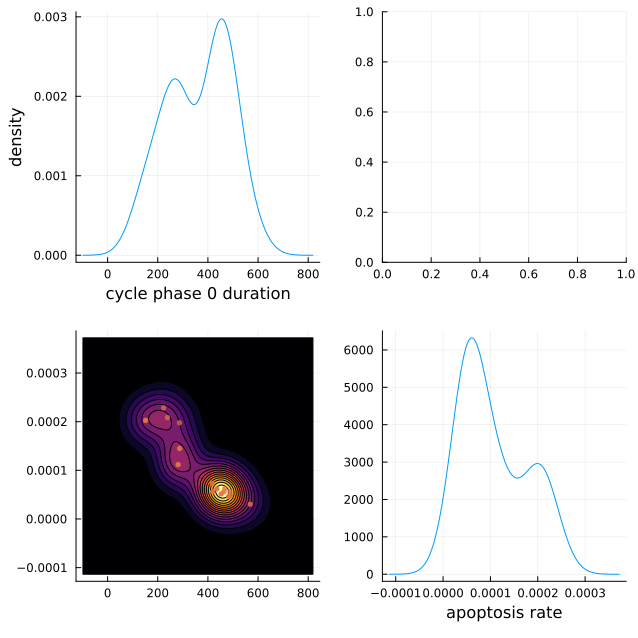
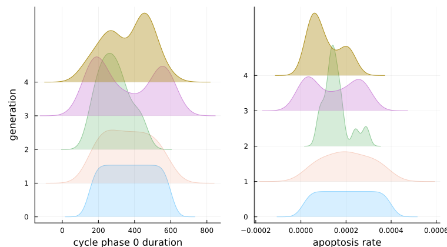
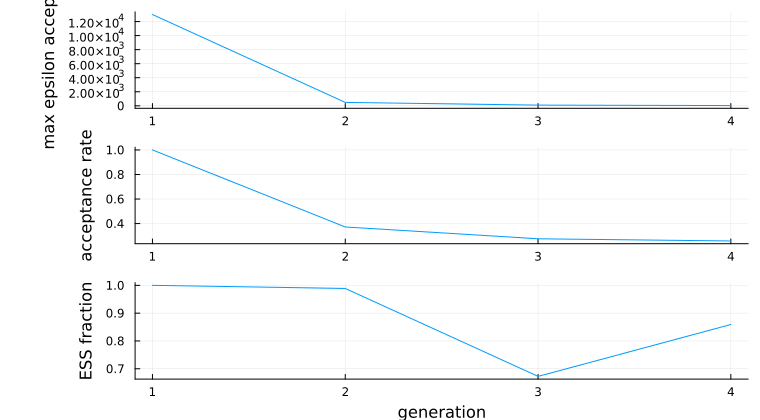
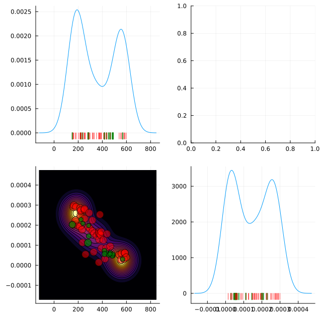

Calibration
Fit a PhysiCell model's parameters to observed data with ABC-SMC, then inspect, sample, and re-run the posterior.
Why ABC-SMC. Approximate Bayesian Computation — Sequential Monte Carlo is a likelihood-free inference method. It refines a population of parameter samples (particles) over successive generations, keeping only those whose simulated output falls within a shrinking tolerance (epsilon) of the observed data. An agent-based model has no tractable likelihood, so the method that applies is the one that only ever needs to run the model.
What comes from where. The implementation is native Julia — no Python or conda environment is required. The algorithm lives in ModelManager; PhysiCellModelManager.jl contributes the PhysiCell-specific summary statistics (populationCountQoI, populationFractionQoI, meanPopulationTimeSeriesQoI). One using PhysiCellModelManager brings both.
Quick start
Fix everything you are not calibrating in a reference monad, list the parameters you are with their priors, state the observed data, and hand the pieces to CalibrationProblem. run takes a method and the problem, and returns the result that posterior reads.
using PhysiCellModelManager
using Distributions
# 1. Model inputs — fix non-calibrated parameters via a reference monad
inputs = InputFolders("default", "default")
dv_time = DiscreteVariation(configPath("overall", "max_time"), 1440.0)
ref = createTrial(inputs, [dv_time]; n_replicates = 0)
# 2. Parameters to infer, with priors from Distributions.jl
parameters = [
DistributedVariation(
configPath("cancer", "apoptosis", "rate"),
Uniform(1e-4, 5e-3);
name = "apoptosis_rate"
),
DistributedVariation(
configPath("cancer", "cycle", "duration", 0),
Uniform(480.0, 1440.0);
name = "cycle_duration"
),
]
# 3. Observed data — must match the return type of your summary statistic
observed_data = Dict("cancer" => 3500.0, "immune" => 800.0)
# 4. Build the problem
problem = CalibrationProblem(
ref, # Monad — sets inputs + reference_variation_id
parameters,
observed_data,
populationCountQoI(), # summary statistic (QoI form — see below)
mseDistance; # distance function
n_replicates = 3,
)
# 5. Run the calibration: a method object, then the problem
method = ABCSMC(
population_size = 200,
max_nr_populations = 15,
minimum_epsilon = 0.05,
)
result = run(method, problem; description = "apoptosis-cycle calibration")
# 6. Extract the posterior
df, weights = posterior(result) # final generation
df3, w3 = posterior(result; generation = 3) # specific earlier generationDefining the calibration problem
CalibrationProblem bundles everything the calibration loop needs: which model to run, which parameters vary and under what priors, what was observed, how one simulation is measured, and how that measurement is scored against the observation. Only the first of those has more than one spelling — inputs alone, a reference monad, or a StudySpec — and the choice is about what fixes the parameters you are not calibrating.
Simple form — InputFolders as first argument
problem = CalibrationProblem(
inputs, # InputFolders
parameters, # Vector of DistributedVariation / CoVariation / LatentVariation
observed_data, # whatever your distance's second argument expects (Dict, Vector, or scalar)
summary_statistic, # a QoI, a vector of QoIs, or a plain (sim::Simulation) -> value
distance; # (simulated, observed) → Float64
n_replicates = 1, # replicates per particle (combined by the QoI's `reduce`; mean by default)
)Reference monad form — fixing non-calibrated parameters
A Monad as the first argument supplies the inputs and locks every non-calibrated parameter to that monad's variation, exactly as it would with run or createTrial. The reference has to fix each such parameter to a single value, so build it from single-valued variations — a multi-valued one yields a Sampling, which this constructor does not accept.
n_replicates = 0 creates the monad entry without running any simulations; it only reserves the variation ID.
# Fix max_time and save interval for every particle evaluation
dv_time = DiscreteVariation(configPath("overall", "max_time"), 1440.0)
dv_interval = DiscreteVariation(configPath("full_data", "interval"), 60.0)
ref = createTrial(inputs, [dv_time, dv_interval]; n_replicates = 0)
problem = CalibrationProblem(
ref, # Monad — provides both inputs and reference_variation_id
parameters,
observed_data,
summary_statistic,
distance;
n_replicates = 3,
)StudySpec form — one model-and-parameters half, two questions
A StudySpec holds the half of a study that a sensitivity sweep and a calibration have in common: the input folders, the parameters, the baseline to vary from, and the replicate count. Build it once when you intend to ask both questions of the same model over the same parameters, and neither has to restate that half. observed_data, summary_statistic and distance stay on the problem, because a sensitivity study has none of them.
CalibrationProblem(spec, observed_data, summary_statistic, distance; kwargs...) takes the spec's inputs, parameters, reference variation and replicate count; n_replicates and reference_variation_id may still be overridden.
spec = StudySpec(inputs, parameters; n_replicates = 3)
gsa = run(MOAT(), spec; functions = [populationCountQoI()]) # sensitivity, same spec
problem = CalibrationProblem(spec, observed_data, populationCountQoI(), mseDistance)
result = run(ABCSMC(population_size = 200), problem)Parameters
Any DistributedVariation, CoVariation{DistributedVariation}, or LatentVariation can be a calibration parameter, and priors come from Distributions.jl. A CoVariation draws all its members from one CDF value; a LatentVariation sends one scalar through user-supplied maps to several XML paths, which is how a parameter with no XML path of its own gets calibrated.
LatentVariation needs inverse_maps to use the simulation bank. For DistributedVariation and CoVariation parameters the inverse maps are constructed automatically; for LatentVariation they must be supplied. Without them the simulation bank (cdf_grid_k) is silently disabled for the entire calibration: proposals cannot be matched to existing monads, so every proposal triggers a new simulation. Supply one inverse map per latent dimension, satisfying inverse_maps[i](maps[i](u)) ≈ u. If you do not set cdf_grid_k, omitting them is harmless.
All three forms take name = (the posterior's column name); LatentVariation also takes target_names and inverse_maps.
# Single XML path with a continuous prior
dv = DistributedVariation(configPath("default", "migration", "speed"), LogNormal(0.0, 1.0))
# Two parameters that move together (CoVariation)
cv = CoVariation([
DistributedVariation(configPath("cancer", "birth", "rate"), Uniform(0.01, 0.1)),
DistributedVariation(configPath("cancer", "death", "rate"), Uniform(0.001, 0.05)),
])
# Latent variation: one scalar controls multiple XML paths through user-supplied maps.
# `inverse_maps` is what keeps the simulation bank usable — see below.
lv = LatentVariation(
[Uniform(0.0, 1.0)],
[configPath("cancer", "apoptosis", "rate"), configPath("immune", "apoptosis", "rate")],
[u -> 1e-4 * exp(5*u[1]), u -> 5e-5 * exp(5*u[1])];
name = "apoptosis_scale",
target_names = ["cancer_apoptosis", "immune_apoptosis"],
inverse_maps = [v -> log(v[1] / 1e-4) / 5],
)Summary statistics
A summary statistic measures one simulation; ModelManager combines a parameter set's replicates for you. A plain function is averaged across replicates with mean; pass a QoI when you need a different reduction, or when the quantity must be computed after the replicates are combined rather than before.
Annotate the argument ::Simulation. A summary_statistic receives a Simulation, not a monad ID, and does no averaging of its own. A function written against the monad-level contract returns a different number rather than erroring if it is untyped, so declare the argument — ModelManager warns when it is not declared. The built-in measurements already have that shape.
Pass a QoI, a vector of them, or a plain function of a Simulation. The ready-made ones are in Built-in summary statistics.
function my_stat(sim::Simulation)
# ... measure this one simulation ...
return value
end
problem = CalibrationProblem(inputs, params, observed, my_stat, mseDistance)Distance functions
A distance function is any (simulated, observed) → Float64. simulated is a SummaryValues: what each QoI's reduce returned, keyed by (qoi name, key) and indexable three ways — by the key your own reduce returned (sim["cancer"], while only one QoI reports that key), by the "<qoi name>.<key>" label the sink and sensitivity analysis also use (sim["population_count.cancer"]), or by the exact tuple (sim[("population_count", "cancer")]). A Real-valued QoI sits under its name alone. observed is whatever you set observed_data to.
The keys of observed_data are the comparison: mseDistance resolves each one in the simulated summary, an observed key the summary statistic did not produce is an error rather than a silent zero, and an extra simulated component is ignored — a simulation is always known better than the data.
mseDistance is the built-in option; a custom function may use any types.
# Weighted MSE on two cell populations
function my_dist(sim, obs)
return 0.9 * (sim["cancer"] - obs["cancer"])^2 +
0.1 * (sim["immune"] - obs["immune"])^2
end
# L2 norm on one cell type's time series (the shape meanPopulationTimeSeriesQoI produces)
function ts_dist(sim, obs)
return sum((sim["tumor"] .- obs["tumor"]).^2) / length(obs["tumor"])
endRunning calibration
run dispatches on the method, so the verb is the same one that launches a trial or a sensitivity analysis. Algorithm settings belong to the method object — build an ABCSMC and keep it if you want the run to be reproducible or the settings reused. The keywords run itself takes are run controls, not settings: description is free-text prose stored in the database row, tags are the key => value labels you intend to search on (they are applied before any simulation is dispatched, so they survive an interrupted run), run_kwargs is forwarded to each underlying run(sampling; ...) call, progress picks the console verbosity (:auto, :none, :generation, :batch, :bar), and on_monad_failure is :reject (record the particle's distance as missing, so it is never accepted, and carry on) or :error.
Each generation proceeds the same way. Generation 1 proposes population_size particles from a Sobol low-discrepancy sequence in the unit hypercube, one dimension per parameter, each coordinate mapped through its prior CDF — better prior coverage than random sampling. Generation t > 1 systematically resamples a parent from the previous weighted generation and perturbs it with the fitted kernel. Every proposed particle becomes a Monad at those values, runs quietly, and is scored by your summary_statistic and distance. Particles below the current epsilon are accepted (generation 1 keeps everything), the population is reweighted with the standard ABC-SMC importance weights, the next epsilon is taken as the epsilon_quantile quantile of the accepted distances but never below minimum_epsilon, and the generation is written to disk before the stopping criteria are checked.
run(method, problem) returns the calibration result. Settings live on the ABCSMC object; description, tags, run_kwargs, progress and on_monad_failure are keywords of the call.
# Keep the method object when you want to reuse or record the settings
method = ABCSMC(population_size = 200, max_nr_populations = 15, minimum_epsilon = 0.05)
result = run(method, problem; description = "my run")
# Or construct it inline, with labels you can query later
result = run(
ABCSMC(population_size = 200, store_rejected = true),
problem;
tags = ("project" => "immune-escape",),
progress = :generation,
)What run returns. An ABCResult holds calibration::Calibration (the database row and its folder), generations::Vector{GenerationResult} in order, parameters — the CalibrationParameter objects that convert CDF coordinates back to target values — and method::ABCSMC. The run-level accessors take the result directly, so .calibration is optional: Sampling, monadIDs, simulationIDs, tag!, tags, calibrationsTable and deleteCalibration all forward to it.
The older wrapper names. Before run dispatched on the method, two verbs did this job and both still work. runABC(problem::CalibrationProblem; method=nothing, kwargs...) additionally accepts the ABCSMC fields as loose keywords — runABC(problem; population_size=200) — but not alongside a method = object; passing both is an error. runCalibration(method::ABCSMC, problem::CalibrationProblem; kwargs...) is exactly what run(method, problem) calls.
Adding a method. AbstractCalibrationMethod is the supertype; ABCSMC is the only concrete subtype today. A new one is a new subtype plus the run method for it — which is the point of dispatching on the method rather than naming the algorithm in the verb.
Decided: run dispatching on the method type is the documented entry point for a calibration, as it already is for a trial and for a sensitivity analysis. Adding a calibration method then adds a subtype and a run method, and no new verb anywhere.
Rejected: keeping runABC as the documented name. It names one algorithm, so the manual would need a new verb for every method added, and a reader who learned runABC would have learned nothing transferable.
Open: whether runABC and runCalibration should be formally deprecated. They are the signatures in every script written so far, and the wrappers cost nothing to keep; a deprecation warning is a cost paid by every existing user for a tidiness they did not ask for.
ABCSMC settings
All fields have defaults and are given as keyword arguments to ABCSMC.
| Field | Default | Description |
|---|---|---|
population_size | 100 | Accepted particles per generation |
max_nr_populations | 10 | Maximum number of generations |
minimum_epsilon | 0.01 | Stop when ε reaches this value |
epsilon_quantile | 0.5 | Quantile of accepted distances used to set the next ε (default: median) |
perturbation_kernel | GaussianKernel() | Proposal kernel; see Perturbation kernels |
epsilon_schedule | nothing | Manual ε sequence overriding adaptive rule; see below |
min_acceptance_rate | 0.0 (off) | Stop when acceptance rate drops below this fraction |
min_epsilon_decrease | 0.0 (off) | Stop when relative ε decrease falls below this fraction |
min_ess_fraction | 0.0 (off) | Stop when ESS / population_size falls below this fraction |
accept_overflow | false | Keep all particles passing ε, not just population_size |
cdf_grid_k | nothing (off) | Enable simulation bank with dyadic-grid snapping at depth k; see below |
max_evaluations | nothing (off) | Hard budget cap on total particle evaluations |
store_rejected | false | Persist rejected proposals, so plot(result, :transition; space = :cdf) can show them |
Manual epsilon schedule
Generation t uses epsilon_schedule[t-1], and the schedule takes precedence over epsilon_quantile. A hand-written schedule can be far more aggressive than the data supports, so min_acceptance_rate is worth setting alongside it as a safety stop.
method = ABCSMC(
population_size = 100,
epsilon_schedule = [100.0, 30.0, 10.0, 3.0, 1.0],
)Simulation bank and CDF-grid snapping (cdf_grid_k)
With cdf_grid_k = k, ModelManager builds a registry — the simulation bank — of all existing monads whose calibrated parameters fall inside the prior support. For each proposal it first checks whether any bank entry falls within the grid cell around that proposal; if so, that monad is reused at its actual coordinates and nothing new is simulated. Only when no bank match is found is the proposal snapped to the nearest dyadic grid point at depth k, where a new simulation is run (or an exact match from a previous calibration is reused). The grid refines each generation (k_eff = k + t − 1), tracking the narrowing posterior.
method = ABCSMC(population_size = 200, max_nr_populations = 10, cdf_grid_k = 3)Generation 1 is never warm-started. Seeding it with pre-existing simulations would bias the population away from the prior — prior sweeps and sensitivity designs cluster at particular values — so every gen-1 particle is placed via the Sobol sequence instead. Monad(...; use_previous=true) is used internally for every particle regardless, so an exact parameter point already in the database is reused for free.
What the bank adds on top of that. At calibration start it queries all existing monads in the database — prior sweeps, sensitivity analyses, earlier calibration runs — whose calibrated parameters fall inside the prior support. Only monads with at least one simulation running or completed are eligible; one whose simulations never started has nothing to reuse. These are indexed in a KD-tree and consulted at every proposal, in any generation. This is the practical mechanism for leveraging prior computational work.
Evaluation budget (max_evaluations)
The cap is applied before each batch of proposals is dispatched: a batch that would exceed the budget is trimmed to exactly the remaining allowance, so the run never evaluates more than max_evaluations particles. The final generation may therefore hold fewer than population_size particles, and if max_evaluations is below population_size even the first generation is trimmed. The current generation's accepted particles are saved before stopping.
The budget counts particles, not simulations. Each particle evaluation is one Monad, and PCMM runs n_replicates simulations per monad (set on the CalibrationProblem). So max_evaluations = 5000 with n_replicates = 3 can launch up to 15,000 PhysiCell simulations — size the budget with your replicate count in mind.
A hard cap on the total particle evaluations across the whole run, regardless of generation count.
method = ABCSMC(population_size = 100, max_nr_populations = 20, max_evaluations = 5000)Perturbation kernels
The default scale is 2.0, following Beaumont et al. (2009): a proposal kernel is deliberately over-dispersed relative to the posterior it was fitted to, because a kernel that matched the posterior exactly would never propose anything outside it and the population would collapse. A per-generation vector lets you tighten it as the posterior narrows.
The kernel controls how generation-t+1 proposals are drawn from generation-t particles. Pass it as perturbation_kernel to ABCSMC.
| Kernel | When to use |
|---|---|
GaussianKernel (default) | Low-dimensional problems with roughly elliptical posteriors |
ComponentwiseKernel | High dimensions where full covariance estimation is noisy |
LocalNNKernel | Posteriors that concentrate at different rates in different regions |
LocalNNCovKernel | Strongly anisotropic or banana-shaped posteriors |
# Full covariance Gaussian (default)
method = ABCSMC(perturbation_kernel = GaussianKernel())
# Diagonal — independent per-parameter bandwidths
method = ABCSMC(perturbation_kernel = ComponentwiseKernel())
# Local bandwidth based on k nearest neighbours
method = ABCSMC(perturbation_kernel = LocalNNKernel(k = 15))
# Local covariance based on k nearest neighbours
method = ABCSMC(perturbation_kernel = LocalNNCovKernel(k = 15))
# GaussianKernel and ComponentwiseKernel take an optional `scale` on the weighted (co)variance
GaussianKernel(1.0) # scale = 1 × covariance
GaussianKernel([1.0, 2.0]) # per-generation scale vectorResuming a calibration
An interrupted run — crash, user stop, HPC timeout — has already saved its completed generations to disk, so resuming appends rather than repeats. The original CalibrationProblem is loaded from problem.jld2 in the calibration folder and the settings from method.toml, so a calibration ID is all you normally need.
method = replaces; keywords patch. An ABCSMC object supplies every field, so method = ABCSMC(max_nr_populations=20) silently resets population size, kernel, epsilon rule and the rest to constructor defaults rather than the values the run used. To change some settings and keep the rest, pass them as keywords. Passing both a method object and individual settings is an error. Whenever the effective settings differ from method.toml the file is rewritten to match, so a later resume does not revert. Nothing already on disk is recomputed, so a changed setting takes effect from the next generation onward.
resumeCalibration takes a Calibration and continues from the next generation; resumeABC is an alias for it with identical arguments. run(calibration) is the same operation.
# Load the calibration by ID and continue from where it left off
calibration = Calibration(42)
result = resumeCalibration(calibration)
result = resumeABC(calibration) # the ABC-specific alias, same arguments
result = run(calibration) # and the same thing through `run`
# Patch one setting — e.g. allow more generations than the original run
result = resumeCalibration(calibration; max_nr_populations = 20)
# If the original problem used anonymous functions (not serializable), re-supply it:
result = resumeCalibration(calibration; problem = problem)Resumability and anonymous functions
ModelManager saves the CalibrationProblem to problem.jld2 at the start of each run, and can restore a function from it only when JLD2 can name it: a function defined at the top level of a file or module. A lambda or closure — including a named function defined inside another function — is saved as nothing, and a bare resumeCalibration(Calibration(42)) then refuses with "problem.jld2 contains only a partial manifest" until you re-supply the problem.
PCMM's QoI builders restore on their own: their keyword arguments travel in the QoI's data slot and both of their functions are named. Do the same for a measurement of your own that needs parameters — pass them as data= instead of capturing them in a closure; that switches compute and reduce to (sim, data) and (values, data), and the ModelManager calibration manual works through an example. mseDistance and any other top-level function restore as well.
# Custom logic: define at module level (not inside another function or as a lambda).
# A summary statistic measures ONE simulation; the library reduces the replicates.
function my_stat(sim::Simulation)
counts = finalPopulationCount(sim)
# ... transform as needed ...
return counts
end
apoptosis_map(u) = 1e-4 * exp(5*u[1])
apoptosis_inv(v) = log(v[1] / 1e-4) / 5
lv = LatentVariation(
[Uniform(0.0, 1.0)],
[configPath("cancer", "apoptosis", "rate")],
[apoptosis_map];
inverse_maps = [apoptosis_inv],
)
# Anonymous: problem.jld2 will be incomplete, so keep `problem` to re-supply on resume
problem = CalibrationProblem(ref, params, observed,
sim -> finalPopulationCount(sim), # a lambda cannot be restored by name
mseDistance)
result = resumeCalibration(Calibration(42); problem = problem)Inspecting results
Posterior samples
posterior returns (df, weights): a DataFrame with one column per calibrated parameter (display names) and one row per particle, and a Vector{Float64} summing to 1. It reads a live result or a Calibration on disk.
# From a live result
df, weights = posterior(result) # final generation
df3, w3 = posterior(result; generation = 3) # any earlier generation
# From just a calibration ID (after a session restart)
df, weights = posterior(Calibration(42))
df, weights = posterior(Calibration(42); generation = 3)A GenerationResult is what a generation actually stored, and posterior is the view of it in target space. Its particles frame holds latent CDF coordinates, the algorithm's internal representation; alongside it are weights, distances, monad_ids, ess, acceptance_rate, n_evaluations, and two distinct epsilons — max_epsilon_accepted, the largest distance the generation actually accepted, and epsilon_threshold, the cutoff it ran against (nothing for generation 1, which accepts everything). proposal_distances records every proposal accepted or not; rejected_proposals is populated only under ABCSMC(store_rejected = true).
Convergence diagnostics
Columns: t, max_epsilon_accepted, epsilon_threshold, acceptance_rate, n_accepted, ess, ess_fraction, n_evaluations. ModelManager 0.9 split the single epsilon in two: max_epsilon_accepted is the largest distance the generation actually accepted, epsilon_threshold the value it ran against, which is missing for generation 1 and for generations recorded before the distinction existed.
ConvergenceSummary collects the per-generation statistics into one table, from a result or from a calibration ID. It behaves like a DataFrame for property access (cs.max_epsilon_accepted).
cs = ConvergenceSummary(result)
# or, from a calibration ID after a session restart:
cs = ConvergenceSummary(Calibration(42))Visualization
Requires a Plots.jl backend (using Plots). Every recipe accepts a Calibration in place of the result, loading the data from disk.
# Corner (pairs) plot of the final-generation posterior
plot(result)
plot(result; generation = 3) # specific generation
plot(result; space = :cdf) # CDF coordinates (should be ≈ Uniform for a good fit)
# Posterior narrowing across generations (one panel per parameter)
plot(result, :ridgeline)
# Convergence trace (epsilon, acceptance rate, ESS fraction)
plot(ConvergenceSummary(result))
# Generation-transition plot: gen-t posterior + gen-(t+1) proposals (accepted=green, rejected=red)
plot(result, :transition) # last complete transition
plot(result, :transition; generation = 2) # specific transition t → t+1
# From disk, with no in-memory result
plot(Calibration(42))
plot(Calibration(42), :ridgeline)The figures below come from a two-parameter example: a cycle phase duration and an apoptosis rate, calibrated to one simulation's final cell count on the template project.




Sampling the posterior
A posterior is worth more than its summary statistics: drawing parameter sets from it and running them is a posterior predictive check. samplePosterior draws n parameter sets as a DataFrame of display columns. By default each draw is one of the accepted particles, resampled with probability equal to its importance weight, so the frame carries a monad_id column and the check can read those monads' existing output instead of simulating again. With smooth = true the weighted particles become a Gaussian kernel density estimate and the draws are new parameter sets between them, so there is no monad_id.
The kernel is fitted in CDF space, which is what keeps a draw inside every prior's support, respects a log-scaled prior, and lands a discrete parameter on one of its levels. Its bandwidth is not the run's perturbation_kernel scale, which is deliberately over-dispersed for proposals.
samplePosterior(result_or_calibration, n; generation = :final, smooth = false, rng) returns the draws; createTrial(result, draws) turns them into a runnable Sampling, one monad per distinct parameter set, ready for run.
draws = samplePosterior(result, 200) # existing particles, with monad_id
new_points = samplePosterior(result, 200; smooth = true) # new parameter sets, no monad_id
samplePosterior(Calibration(42), 50; generation = 2) # from disk
# Run the draws: one monad per distinct parameter set, over the calibration's own inputs
sampling = createTrial(result, new_points)
run(sampling)
# `n_replicates` defaults to the run's; a Calibration works in place of the result
sampling = createTrial(Calibration(42), draws; n_replicates = 5)createTrial(result, draws) turns each row's target values into one DiscreteVariation per calibrated target, resolved against the run's reference variation exactly as the calibration created its own monads. A plain draw therefore resolves to the monad it came from and adds no simulations unless n_replicates exceeds the run's; a smoothed draw creates a new monad. A Sampling is a set, so a parameter set drawn more than once appears once — use the monad_id column directly to keep the multiplicities of plain draws. The inputs, reference variation and default n_replicates are read from problem.jld2, but only each parameter's targets and types are needed, not its maps, so this works even for a LatentVariation saved with anonymous maps. Smoothed sampling from a Calibration does need those maps, and its error names resumeABC(cal; problem = my_problem) as the way back.
Managing calibration runs
delete_subs defaults to false, unlike the trial-level deleters, because a calibration's monads are shared — through the simulation bank and use_previous they may predate the run and outlive it. Passing true deletes only the monads these runs alone used. Deleting a run discards the folder that holds the generation CSVs, the serialized problem and the settings, so posterior and resumeCalibration stop working for it.
calibrationsTable is one row per run — CalibrationID, DateTime, Method, Description — and printCalibrationsTable prints it, or sends it to any sink. deleteCalibration removes a run's database row, its tags, and its output folder.
calibrationsTable() # every run in the project
calibrationsTable(; tags = true) # plus one column per tag key in use
calibrationsTable([1, 2, 3]) # specific IDs; a Calibration or a run's result also works
printCalibrationsTable()
printCalibrationsTable(; sink = CSV.write("calibrations.csv"))
deleteCalibration(result) # bookkeeping and folder only
deleteCalibration(3; delete_subs = true) # and the monads no other run usesOutput layout
Each run creates data/outputs/calibrations/{id}/: three files describing the run, then one folder per generation, named by generation number zero-padded to fit max_nr_populations.
data/outputs/calibrations/1/
├── problem.jld2 # the serialized CalibrationProblem, so a resume needs no re-supplied problem
├── method.toml # the ABCSMC settings
├── parameters.toml # display name → database column → prior, per parameter
└── generations/
├── 01/
│ ├── particles.csv # accepted particles, in target space
│ ├── cdfs.csv # the same particles in CDF space
│ ├── metadata.toml # both epsilons, ESS, acceptance rate, evaluation count
│ ├── monads.csv # every monad evaluated, as compressed ID ranges
│ ├── proposals.csv # distance and outcome for every proposal
│ ├── failed_simulations.csv # only when a simulation failed
│ └── failed_monads.csv # only when a monad lost every simulation
├── 02/
└── …Calibrations written before ModelManager 0.9 stored the same artifacts as flat files (generation_01.csv, generation_01_monads.csv, and a generation_cdfs/ subdirectory). Those are read as they are, and are moved into the folder layout the first time the run is resumed. ModelManager owns this layout and documents every column under What a run leaves on disk.
Built-in summary statistics
Three builders, each returning a QoI that measures a single Simulation — the shape CalibrationProblem asks for — whose value is a Dict keyed by cell type. ModelManager reduces a monad's replicates.
populationCountQoI
Each cell type's population count at the snapshot index names — :final by default. compute returns missing when that snapshot is not on disk.
populationCountQoI(; index=:final, cell_types=nothing, include_dead=false)populationFractionQoI
Each cell type's fraction of the total population at that same snapshot. The denominator is the whole population, so restricting to one cell type reports its share of everything rather than 1.0.
populationFractionQoI(; index=:final, cell_types=nothing, include_dead=false)meanPopulationTimeSeriesQoI
Each cell type's count over time, on the replicate's own grid, averaged elementwise across replicates. Use it when observed_data is a time series rather than a single endpoint value.
meanPopulationTimeSeriesQoI(; cell_types=nothing, include_dead=false)QoI form
populationCountQoI and populationFractionQoI also work with run(method, inputs, evs; functions=), which spreads a Dict-valued measurement into one sensitivity analysis per key — the same reading the post-processing sink gives it. So populationCountQoI() yields one analysis per cell type without naming them in advance, labelled population_count.<cell_type>. meanPopulationTimeSeriesQoI does not: each of its components is a time series rather than the Real an index is computed from. See One measurement, one analysis per cell type.
To analyse a finished monad directly rather than calibrate against it, use finalPopulationCount on a Monad or MonadPopulationTimeSeries: they take a monad and do their own averaging.
One reducer everywhere. No builder on this page defines a reduce, so a monad's replicates are averaged by ModelManager's default per-key mean throughout. That default asks the replicates to report the same cell types, which they always do — the keys are the model's declared cell-type roster, and replicates of a monad share a config.
Pass the builder's result where the summary statistic goes. Omit cell_types and every cell type present in the output is measured, since a QoI discovers them from the simulation rather than naming them at construction.
problem = CalibrationProblem(inputs, params, observed, populationCountQoI(), mseDistance)
populationCountQoI(; cell_types=["cancer", "immune"]) # or restrict the measurementBuilt-in distance functions
mseDistance
mseDistance walks the keys of observed_data: each is resolved in the simulated SummaryValues (an observed key with no simulated counterpart is an error; extra simulated components are ignored), every squared difference is summed — a time-series value contributing one difference per time point — and the total is divided by the number of differences computed. A series key therefore weighs its whole length against an endpoint key's single term; write your own distance to weight them differently, or reduce the series first.
Pass it as the distance argument. Outside calibration it also compares two keyed values, two scalars, or any pair that broadcasts, including two arrays; its docstring lists all five forms.
problem = CalibrationProblem(ref, parameters, observed_data, populationCountQoI(), mseDistance)
mseDistance(3400.0, 3500.0) # two scalars
mseDistance([1.0, 2.0, 3.0], [1.0, 2.5, 2.0]) # two arrays